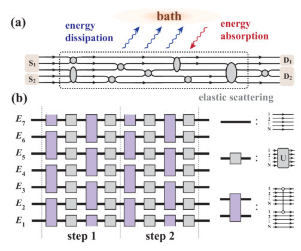
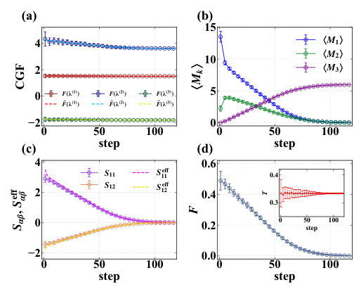
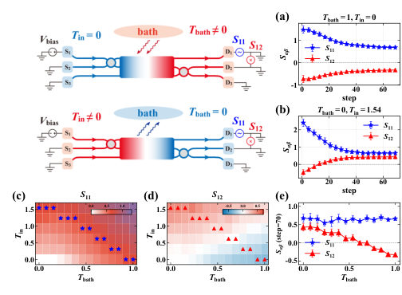

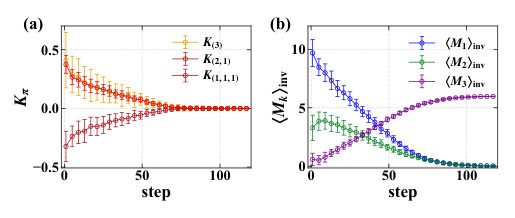
← Index · ← Previous · Next →
Authors: B. A. Tay
Type: theory · Category: other · PDF: https://arxiv.org/pdf/2605.14756v1
Analysis basis: full PDF text, analyzed in chunks
Topic relevance: 🔥 methods for driven-dissipative 4/5 · non-equilibrium dynamics 3/5 · quantum measurements 2/5
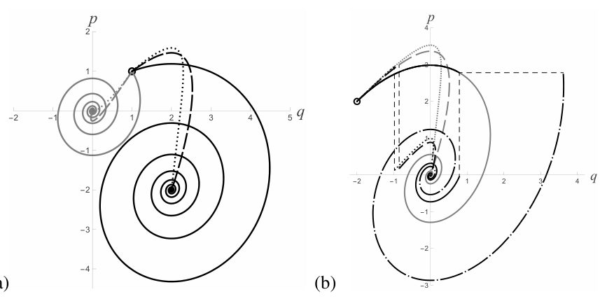
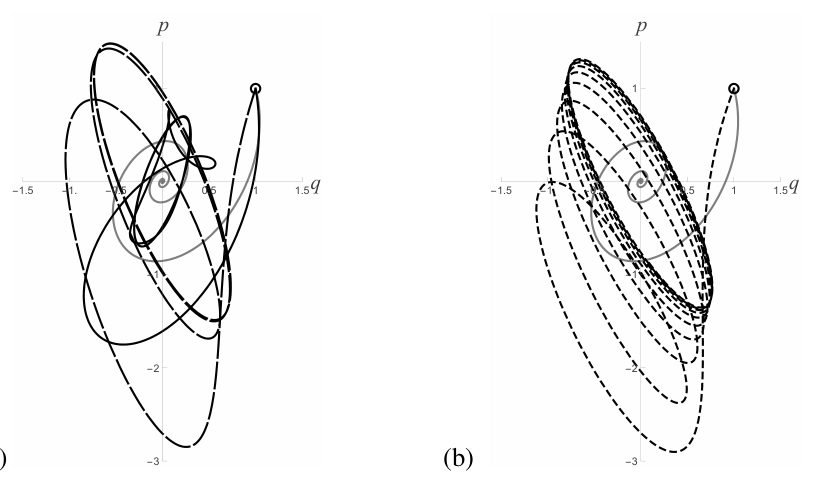
Summary. This paper provides analytical solutions for the evolution of Gaussian states in a driven, dissipative quantum harmonic oscillator. It proves that the drift of the state is independent of bath temperature and fast-rotating modes, and characterizes the system's behavior at exceptional points and under various driving protocols.
Why it may be interesting. This work is highly relevant to researchers in open quantum systems and quantum optics as it provides exact analytical solutions for driven-dissipative dynamics and clarifies the role of environmental noise parameters in the evolution of quantum trajectories.
Main problem. The paper investigates the time evolution of Gaussian mixed states for a linearly driven quantum harmonic oscillator under a generic Markovian master equation, specifically focusing on how different Liouvillian components affect displacement dynamics.
Main result. The study demonstrates that the displacement dynamics (first moments) are independent of bath temperature and fast-rotating modes, and that the exceptional point structure of the driven system remains identical to the non-driven system.
Method. The author uses an analytical approach involving superoperator algebra, displacement superoperators, and biorthogonal eigenbasis solutions to solve the master equation and analyze phase-space trajectories.
Model / system. A single-mode quantum harmonic oscillator subject to a Markovian master equation of the GKSL type, including unitary evolution, dissipation, and linear driving (constant, impulsive, or harmonic).
Key observables. First moments (average position and momentum) and second moments (variances and squeezing parameters).
Important parameters / regimes. Natural frequency (omega_0), decay rate (gamma), bath temperature, driving strength, and the presence of exceptional points (critical damping).
Assumptions / limitations. The system is assumed to be within the Markovian approximation and the states are restricted to the Gaussian regime.
Figures summary. Figure 1(a) shows phase space trajectories under constant driving across different damping regimes; Figure 1(b) illustrates the effect of impulsive driving (kicks) on the oscillator's position.
Paper structure. The paper begins by defining the master equation and the driven system, moves to deriving analytical solutions for Gaussian states, explores the relationship between driven and non-driven Liouvillians (including exceptional points), and concludes with the analysis of specific time-dependent driving cases (impulsive and harmonic).
We study a generic quantum Markovian master equation for a linearly displaced or driven harmonic oscillator. It was known that the displacement dynamics of Gaussian mixed states depends on the unitary part of the Liouvillian, the decay rate of the system but not on the bath temperature. Here we further show that the fast-rotating modes do not affect the system's displacement dynamics under linear driving forces. Analytical solutions of the quantum master equation are obtained for displaced Gaussian mixed states. Because the non-driven and driven Liouvillians are related by a unitary displacement operator, they are expected to share the same exceptional points structure. At the exceptional points, the displacement of critically damped oscillator displays a characteristics polynomial-in-time prefactor multiplied by an exponential decay. We discuss how external time-dependent forces affect the displacement dynamics using impulsive force and harmonic force as examples. The results obtained for constant driving remain valid in the presence of time-dependent driving.
Authors: Guangyue Ji, Jie Wang
Type: theory · Category: strongly correlated electrons · PDF: https://arxiv.org/pdf/2605.13978v1
Analysis basis: full PDF text, analyzed in chunks
Topic relevance: 🔥 analog quantum simulation 4/5 · entanglement & information structure 3/5 · exotic spin models in light-matter 2/5
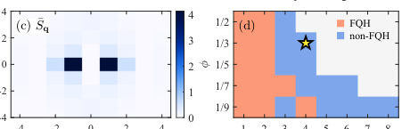
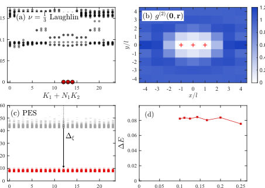
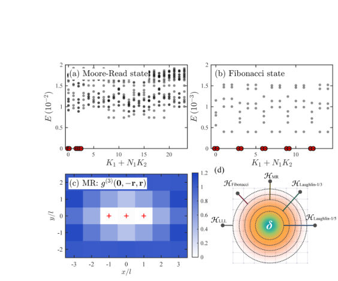
Summary. This paper presents a systematic method to generalize continuum fractional quantum Hall wave functions to lattice systems by replacing contact clustering with discrete lattice-displaced zeros. The resulting model states for the Read-Rezayi series are exact ground states of specific density interactions and preserve essential topological features. This provides a blueprint for engineering topological phases in cold-atom and synthetic flat-band systems.
Why it may be interesting. This work provides a constructive route for engineering topological orders in synthetic flat-band platforms like cold atoms, offering a way to realize complex non-Abelian states through controllable density interactions.
Main problem. The difficulty of constructing exact lattice model wave functions for fractional quantum Hall (FQH) states (like Laughlin, Moore-Read, and Read-Rezayi) beyond simple bosonic systems, specifically overcoming the limitation that particles on a lattice cannot be infinitesimally close to satisfy continuum clustering conditions.
Main result. The authors systematically construct lattice model states for the entire Read-Rezayi series by using a delta-deformation that replaces infinitesimal contact zeros with discrete, distributed lattice zeros. These states are proven to be exact gapped ground states of specific density-density interactions and retain the idealized entanglement features of their continuum counterparts.
Method. The work combines analytical construction using elliptic functions (e.g., modified Weierstrass sigma functions) with numerical exact diagonalization on square and rectangular tori.
Model / system. The study focuses on lattice-based synthetic platforms, such as the Kapit-Mueller model (a Hofstadter model with flat bands) and density-density interaction Hamiltonians where the interaction pattern is matched to the zeros of the wave function.
Key observables. Many-body energy spectrum, pair and three-particle correlation functions (g2, g3), particle-cut entanglement spectrum (PES), projected structure factor, and spectral flow under twisted boundary conditions.
Important parameters / regimes. Filling factor (nu = 1/3, 1/4, 1/2), interaction displacement (delta), magnetic flux density (phi), and interaction range.
Assumptions / limitations. The construction is specific to 'lattice ideal bands' like the Kapit-Mueller model; the broader implications for non-ideal bands are not fully addressed.
Figures summary. Figure 1 shows diagnostics for the nu=1/3 Laughlin state including the many-body spectrum, correlation function zeros, and entanglement gap; Figure 2 demonstrates phase transitions induced by increasing interaction range; Figure 3 shows diagnostics for non-Abelian states; Supplemental figures show spectral flow, bosonic states, and the nu=1/4 Moore-Read state.
Paper structure. The paper introduces the problem of lattice FQH construction, presents the delta-deformation theory for Laughlin states, extends the construction to Moore-Read and Read-Rezayi series, analyzes phase transitions via interaction range, and provides detailed numerical verification in the supplemental material.
Model wave functions are essential for studying fractional quantum Hall phases, yet lattice model states have so far been limited to bosonic systems with on-site interactions. In this work, by combining analytical and numerical methods, we systematically construct lattice model states for the Laughlin, Moore--Read, and general $\mathbb{Z}_k$ Read--Rezayi series. Our lattice-specific states are characterized by their idealized energy and entanglement features and are distinguished from their continuum counterparts by a modified clustering behavior. Our theory advances the understanding of the stability of topologically ordered phases and illustrates the organizing principles of the conformal Hilbert space on lattices. Practically, this work paves the way for further studying lattice-specific excitations and offers a constructive route for engineering topological orders within density interactions, with potential immediate implications for cold-atom and synthetic flat-band platforms.
Authors: Ming Gong, Masahito Ueda
Type: theory · Category: statistical mechanics · PDF: https://arxiv.org/pdf/2605.14263v1
Analysis basis: full PDF text, analyzed in chunks
Topic relevance: 🔥 methods for driven-dissipative 4/5 · non-equilibrium dynamics 3/5 · quantum measurements 2/5




Summary. This paper develops an open quantum theory to explain how dissipation suppresses shot noise in chiral transport by stacking electrons into lower energy states. It introduces a novel mathematical method to reconstruct the internal particle occupancy distribution of quantum channels using only measurable current noise cumulants.
Why it may be interesting. It provides a powerful analytical tool (the inversion scheme) for extracting hidden many-body statistics from measurable noise, which is highly relevant for researchers studying non-equilibrium dynamics and open quantum systems.
Main problem. Understanding the microscopic mechanism of shot-noise suppression in dissipative chiral transport and developing a method to reconstruct hidden internal occupancy distributions from measurable noise cumulants.
Main result. The authors demonstrate that current noise is governed by the competition between occupancy distribution and particle-number fluctuations, and they provide a successful inversion scheme to reconstruct the occupancy distribution from higher-order noise cumulants.
Method. The study uses an open quantum theory framework involving a discrete-time master equation, quantum trajectory simulations via Matrix Product States (MPS), and a mathematical inversion scheme based on filter cumulants and combinatorial expansions.
Model / system. An N-channel chiral transport system (such as quantum Hall edge states) modeled as a multi-layer fermionic quantum circuit in energy space, where electrons undergo elastic scattering via Haar-random unitary gates and energy exchange with a bath via dissipative jump operators.
Key observables. Average occupancy distribution, shot-noise spectral density (S11, S12), Fano factor, transmission coefficient, and higher-order noise cumulants.
Important parameters / regimes. Number of channels (N), number of energy levels (M), dissipation rate (gamma_0), source temperature (T_in), and bath temperature (T_bath).
Assumptions / limitations. The model assumes perfect intra-level channel mixing, inter-level statistical independence, and that dissipative jump operators act primarily on the first channel due to symmetric mixing.
Figures summary. Figure 2 compares exact and effective CGFs and shows noise suppression; Figure 3 demonstrates the sign reversal of inter-channel noise (S12) in different heating regimes; Figure 4 shows the successful reconstruction of the occupancy distribution using the proposed inversion scheme.
Paper structure. The paper introduces the problem of shot-noise in dissipative transport, presents a quantum circuit mapping and master equation model, validates an effective CGF framework, demonstrates a sign reversal in correlation noise, and concludes with a mathematical derivation of an inversion scheme for occupancy reconstruction.
We develop an open quantum theory for shot-noise dynamics in dissipative chiral transport. By mapping a system under consideration onto a quantum circuit, we show that current noise is governed by two competing factors: the average occupancy distribution and particle-number fluctuations. With energy fully relaxed, shot noise is strongly suppressed, reflecting the stacking of electrons into lower energy states due to dissipation. This process quenches the partition noise from partially occupied levels, and finally isolates the residual noise protected by strong $U(1)$ symmetry. Moreover, selectively heating the source against the bath uncovers the underlying competition between the noise contributions from the occupancy distribution and those from the particle-number fluctuations. It triggers a sign reversal in inter-channel correlation noise, a signature masked by seemingly identical single-channel thermal noises. We propose an inversion scheme to experimentally reconstruct the hidden occupancy distribution directly from measurable noise cumulants.
Authors: Botond Oreg, Carter Turnbaugh, Jens Hertkorn, Ningyuan Jia, Martin Zwierlein
Type: experiment · Category: quantum gases · PDF: https://arxiv.org/pdf/2605.14909v1
Analysis basis: full PDF text, analyzed in chunks
Topic relevance: 🔥 analog quantum simulation 4/5 · non-equilibrium dynamics 3/5 · quantum measurements 2/5
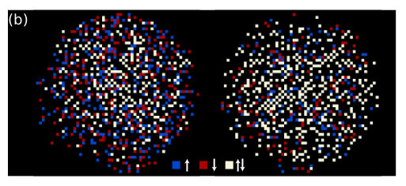
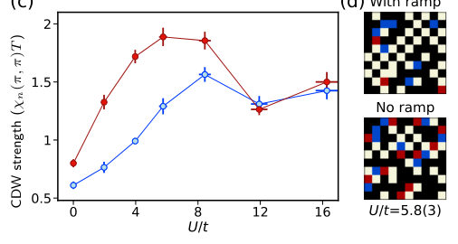
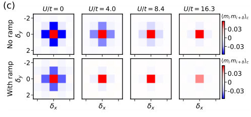
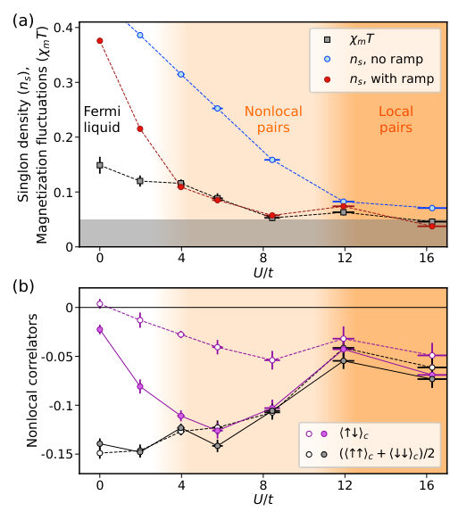
Summary. The researchers developed a technique using a rapid interaction ramp to make nonlocal pairs visible as local doublons in a 2D Fermi-Hubbard system. This method successfully reveals hidden charge-density-wave correlations and distinguishes between the Fermi liquid and pseudogap regimes. It offers a new way to study complex phases like stripe order or FFLO states in ultracold atoms.
Why it may be interesting. This provides a powerful new experimental tool for observing exotic pair orders and phase transitions in many-body systems by using non-equilibrium dynamics to reveal static correlations.
Main problem. Detecting hidden spatial correlations, specifically charge-density-wave order, in the strongly interacting regime of the attractive Hubbard model where nonlocal pairs are difficult to image.
Main result. An interaction ramp technique significantly enhances the visibility of charge-density-wave correlations by projecting nonlocal pairs into detectable local doublons. This allows for the clear distinction between the Fermi liquid and the pseudogap phase.
Method. A rapid linear magnetic field ramp (1 ms) is used to increase the interaction strength, contracting extended pairs into local doublons before single-site, spin-resolved fluorescence imaging.
Model / system. A 2D spin-balanced Fermi gas of 40K atoms in a square optical lattice, realizing the attractive Hubbard model with controlled tunneling (t) and interaction (U) via Feshbach resonance.
Key observables. Doublon density, density-density correlators, density structure factor, charge-density-wave strength, singlon fraction, and spin/magnetization correlations.
Important parameters / regimes. Interaction strength U/t (ranging from weak/Fermi liquid to strong/local pairs), tunneling t = 340 Hz, temperature T/t ~ 0.5, and lattice depth.
Assumptions / limitations. The ramp is fast enough to prevent many-body evolution but slow enough to allow pair contraction; the density distribution remains frozen during the ramp.
Figures summary. Fig 1 shows the ramp schematic and enhanced CDW patterns; Fig 2 displays density-density correlation maps; Fig 4 compares magnetization fluctuations and singlon density across different U/t regimes.
Paper structure. The paper introduces the problem of hidden correlations, describes the experimental setup and the interaction ramp technique, presents results showing enhanced CDW visibility and the identification of the pseudogap phase, and concludes with potential applications to spin-imbalanced and repulsive Hubbard models.
We observe an enhanced visibility of charge-density-wave correlations in a cold-atom realization of the attractive Hubbard model following a rapid boost of the interaction strength. The interaction boost associates nonlocal pairs into doublons which mark the center of mass of the original pairs. The enhancement is largest in the strongly correlated regime where pairing is nonlocal. We distinguish the unpaired Fermi liquid from the pseudogap phase of preformed pairs by analyzing atom-resolved spin-charge correlations after the ramp. The technique we establish here may facilitate the observation of exotic forms of pair order in spin-imbalanced systems, and of stripe order in the dual case of the doped repulsive Hubbard model.
Authors: Evan J. D. Anderson, Kaushik Datta, Boulat A. Bash
Type: both · Category: quantum information and computing · PDF: https://arxiv.org/pdf/2605.14325v1
Analysis basis: full PDF text, analyzed in chunks
Topic relevance: 🔥 QC/QI experiment 4/5 · correlated / nonlocal dissipation 2/5 · quantum measurements 2/5 · entanglement & information structure 1/5
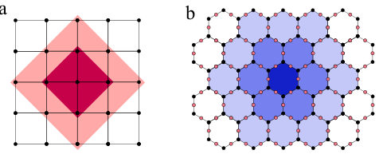
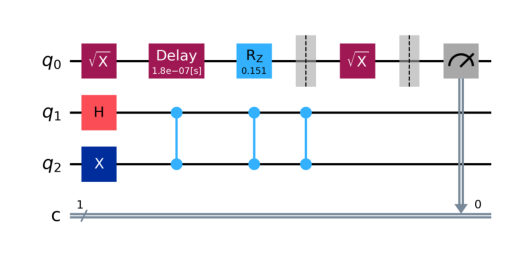
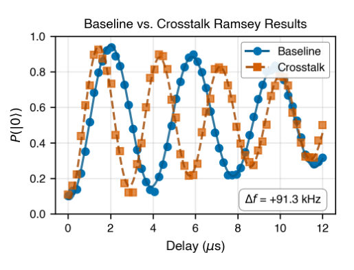
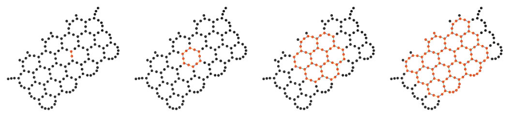
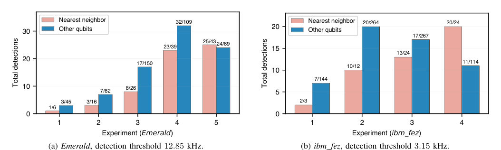
Summary. This paper introduces 'covert quantum computing,' a method to hide computations from adversaries on shared quantum hardware. While theory predicts that a small buffer of qubits can hide activity, experimental results on IBM and IQM processors show that long-range crosstalk can expose the computation, necessitating better spatial isolation.
Why it may be interesting. It addresses the physical-layer security of quantum hardware, specifically how many-body interactions (crosstalk) can be used as a side channel for information leakage, which is highly relevant to the study of open quantum systems and noise in large-scale quantum architectures.
Main problem. How to perform quantum computations on a multi-tenant cloud QPU such that an adversary cannot detect the ongoing computation via crosstalk-induced noise in spectator qubits.
Main result. The authors derive a 'Square-Root Law' stating that a computation can be made covert using only O(sqrt(n)) additional idling qubits, but experimental tests on IBM and IQM hardware reveal long-range crosstalk that creates a side channel for detection.
Method. The paper uses the quantum-strategy framework (quantum combs) and discrete isoperimetric inequalities for theoretical bounds, alongside Ramsey interferometry to experimentally measure frequency shifts in spectator qubits.
Model / system. Superconducting quantum processors with planar topologies, specifically IQM's 54-qubit Emerald (square lattice) and IBM's 156-qubit ibm_fez (heavy-hex lattice), utilizing tunable-coupler architectures.
Key observables. Frequency shifts (delta f) in spectator qubits, ZZ-crosstalk, and the probability of detection (false alarm and missed detection rates).
Important parameters / regimes. n-qubit circuit size, number of shots (k), diamond-norm distance, and the scaling of the boundary size relative to the computational area.
Assumptions / limitations. The initial theoretical model assumes nearest-neighbor crosstalk; the adversary has access to quantum memory and can perform adaptive operations.
Figures summary. Figure 1 shows optimal geometric layouts (diamonds/disks) for minimizing boundaries; Figure 2 shows the Ramsey circuit protocol; Figure 3 shows experimental Ramsey oscillation data; Figure 4 shows the physical qubit layouts on Emerald and ibm_fez; Figure 5 presents bar charts of detected frequency shifts.
Paper structure. The paper introduces the concept of covert quantum computing, develops a theoretical framework using information theory and graph theory to derive scaling laws, presents experimental validation using Ramsey interferometry on two different hardware platforms, and discusses the implications of discovered long-range crosstalk.
As quantum computers become available through multi-tenant cloud platforms, ensuring privacy against adversaries sharing the same quantum processing unit becomes critical. We introduce and explore \emph{covert quantum computing}, a new concept that ensures an adversary with access to all other quantum computational units (QCUs) of a quantum computer cannot detect computation on the subset that they cannot access. Analogous to covert communication, we employ information theory. However, since here the adversary controls the systems used for detection, we require a richer framework for covertness analysis that accounts for the use of quantum memories and adaptive operations. Thus, we adopt the \emph{quantum-strategy} framework used in quantum game theory and memory channel discrimination. Current quantum computers use planar graph circuit layouts and typically assume nearest-neighbor crosstalk. We derive discrete isoperimetric inequalities to show that, for an $n$-qubit circuit under this model, only $\mathcal{O}(\sqrt{n})$ border qubits provide detection information to the adversary. We then explore this scaling law on IQM's 54-qubit \emph{Emerald} processor and IBM's 156-qubit \emph{ibm_fez} machine employing the Heron 2 architecture. We implement Ramsey experiments on qubits not used in computation, and detect nearest-neighbor crosstalk, as expected. However, we also observe long-range coupling effects beyond the border qubits, revealing a side channel that the adversary can exploit. We hypothesize that this long-range crosstalk is induced by leakage from the drive and control lines. Beyond weakening covertness, it exposes co-tenants to both adversarial and unintended crosstalk and degrades circuits that span spatially distributed qubits, motivating further work on spatial isolation and crosstalk characterization.
Authors: Ryan Thorngren, Lei Gioia, Carolyn Zhang
Type: theory · Category: quantum information and computing · PDF: https://arxiv.org/pdf/2605.15200v1
Analysis basis: full PDF text, analyzed in chunks
Topic relevance: 🔥 entanglement & information structure 4/5 · non-equilibrium dynamics 3/5 · methods for driven-dissipative 2/5
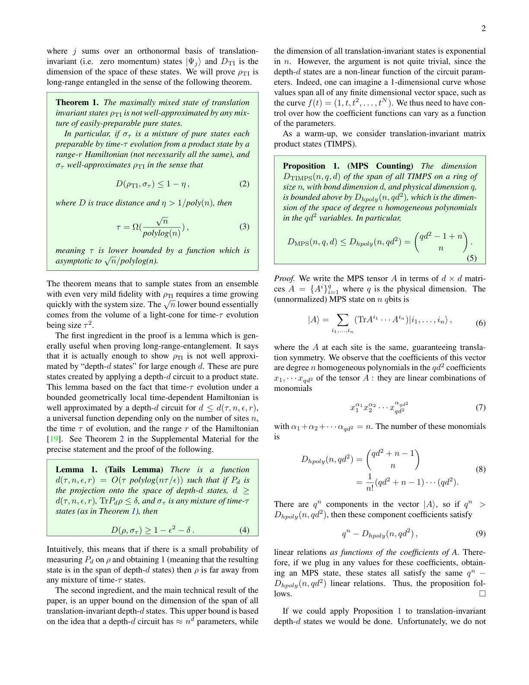
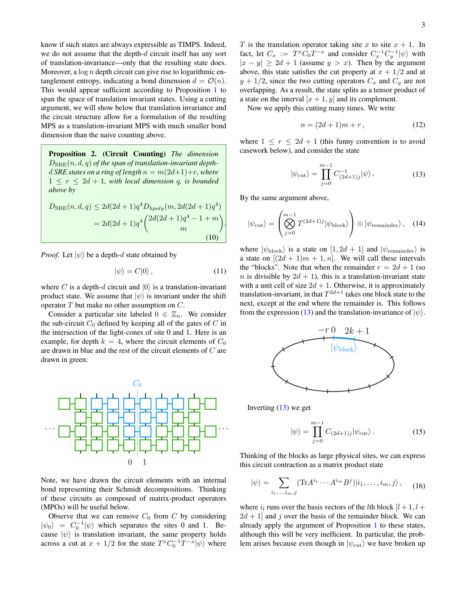
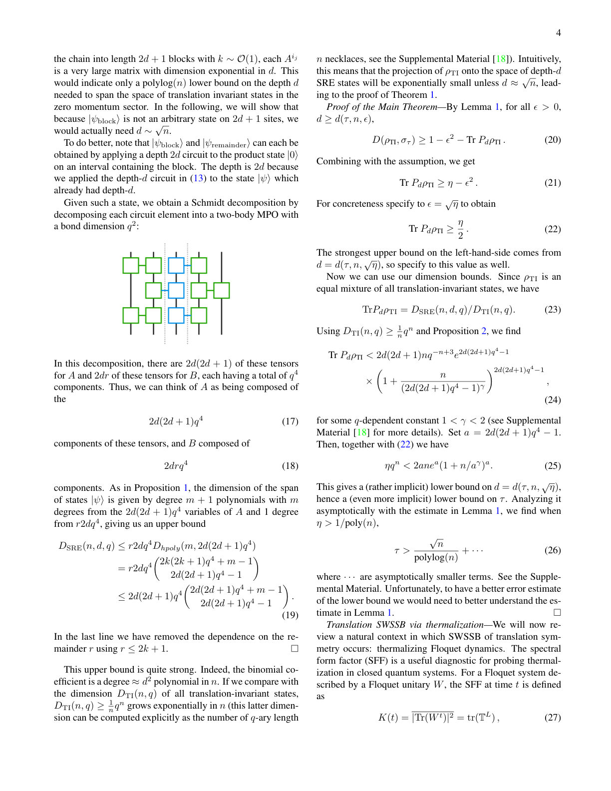
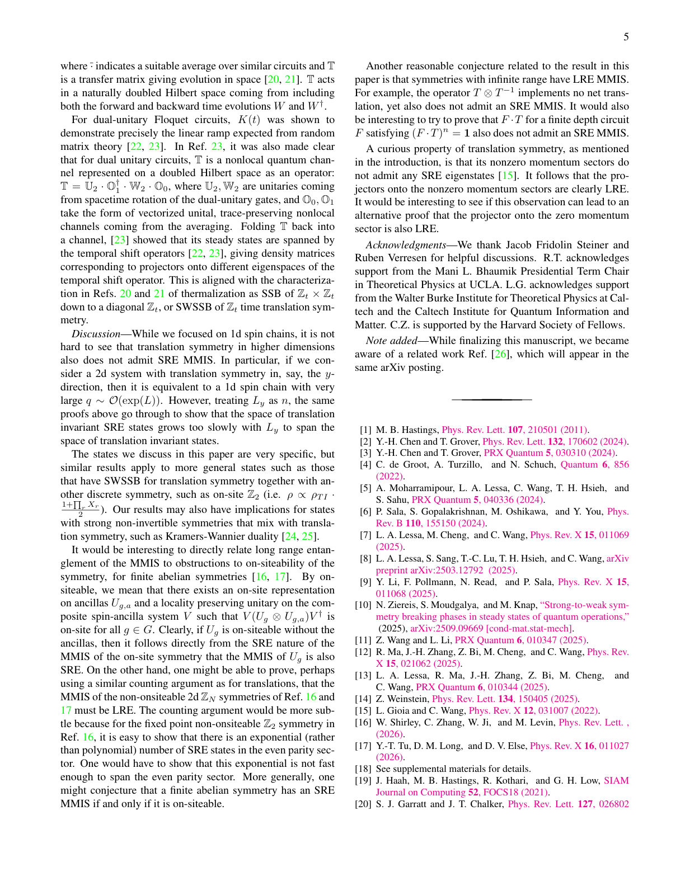
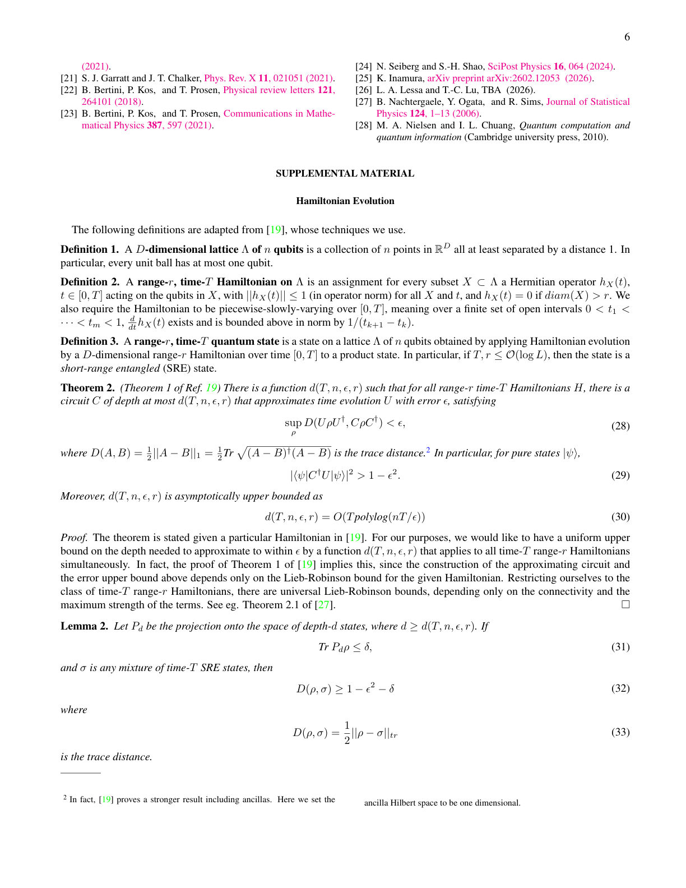
Summary. The paper demonstrates that translation symmetry can force a mixed state to possess long-range entanglement that cannot be decomposed into short-range entangled components. This effect is particularly interesting because it remains hidden from standard local correlation function measurements. The study provides a rigorous lower bound on the circuit depth required to simulate such states.
Why it may be interesting. This is highly relevant for many-body dynamics as it establishes a fundamental link between symmetry, entanglement structure, and the complexity (circuit depth) required for thermalization and state preparation.
Main problem. The paper investigates whether translation symmetry can enforce long-range entanglement (LRE) in mixed states, specifically determining if the maximally mixed state of translation-invariant states is LRE.
Main result. The authors prove that the maximally mixed state of translation-invariant states is LRE because the dimension of the zero momentum sector exceeds the dimension of the space spanned by short-range entangled (SRE) states. This LRE is subtle because it cannot be detected by long-range connected correlation functions.
Method. A dimension-based counting argument is used to compare the size of the zero momentum sector to the space of SRE states, supported by a 'Tails Lemma' and circuit decomposition into Matrix Product Operators.
Model / system. 1D quantum chains of length n with periodic boundary conditions and local Hilbert space dimension q, focusing on the zero momentum sector of translation-invariant states.
Key observables. Trace distance (to measure approximation fidelity), connected correlation functions, and circuit depth/evolution time.
Important parameters / regimes. System size (n), local dimension (q), circuit depth (d), and evolution time (tau).
Assumptions / limitations. The primary results are derived for 1D systems; the proof assumes translation symmetry of the resulting state but not necessarily the generating circuit.
Figures summary. A circuit diagram illustrating a depth-4 circuit with a highlighted light-cone (sub-circuit C0) and internal bonds representing Schmidt decompositions.
Paper structure. The paper begins by defining the problem of LRE in mixed states, introduces a counting argument and dimension bounds, develops a mathematical framework using circuit decomposition and MPS counting, provides the main theorem on LRE, and discusses the implications for correlation functions and higher dimensions.
We show by a counting argument that even though translation symmetry admits symmetric short-range entangled (SRE) eigenstates, there are not enough such SRE eigenstates to span the zero momentum sector. This means that the fixed point strong-to-weak spontaneous symmetry breaking state of translation symmetry is long-range entangled: it cannot be written as a mixture of SRE states. This is a subtle form of long-range entanglement in mixed states that cannot be detected by long-range connected correlation functions.
Authors: Chon-Fai Kam
Type: theory · Category: quantum information and computing · PDF: https://arxiv.org/pdf/2605.15008v1
Analysis basis: full PDF text, analyzed in chunks
Topic relevance: 🔥 entanglement & information structure 4/5 · Dicke superradiance 2/5 · Tavis-Cummings & cavity-many-emitter 2/5
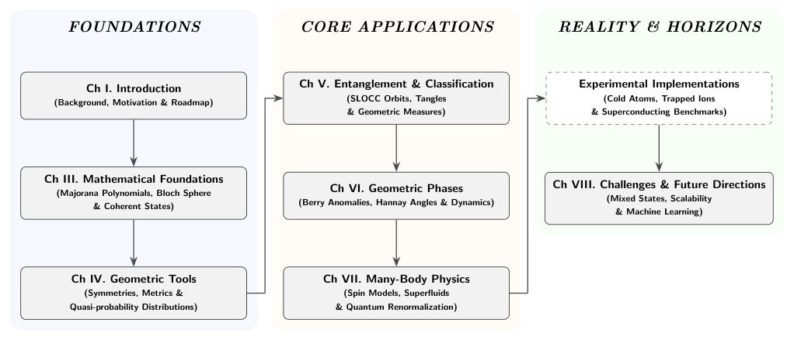
Summary. This review synthesizes the Majorana stellar representation as a geometric framework for studying multipartite entanglement and geometric phases. It demonstrates how mapping quantum states to constellations of points on a sphere simplifies the classification of entanglement and makes the evaluation of many-body invariants computationally tractable. The work also establishes a profound mathematical link between quantum entanglement patterns and the classification of gravitational fields in general relativity.
Why it may be interesting. It provides a powerful geometric tool for analyzing many-body entanglement and phase-space properties, offering a way to bypass computational complexity in symmetric quantum systems and linking quantum correlations to spacetime geometry.
Main problem. The difficulty of characterizing multipartite entanglement and geometric phases in large-scale quantum systems using traditional algebraic methods, which often face #P-hard computational bottlenecks.
Main result. The paper establishes the Majorana stellar representation as a unified geometric language that simplifies entanglement classification (SLOCC) and reduces the complexity of evaluating many-body invariants from #P-hard to polynomial time.
Method. The authors use a mapping of spin-S states to a constellation of points (stars) on a Bloch sphere via the roots of a characteristic polynomial, leveraging stereographic projection and spinor calculus.
Model / system. The study focuses on symmetric multi-qubit systems and higher-spin (S) systems, including bosonic ensembles, Dicke states, and continuous-variable (CV) systems in the Bargmann-Fock space.
Key observables. Concurrence, three-tangle, genuine multipartite entanglement (GME), Berry and Hannay phases, and Husimi Q-function zeros.
Important parameters / regimes. The spin magnitude (S), the number of qubits (N=2S), and the thermodynamic limit (j approaching infinity).
Assumptions / limitations. The primary analytical framework assumes permutation symmetry (the symmetric subspace) and focuses on pure quantum states.
Figures summary. Figure 1 provides a roadmap of the article, outlining the progression from mathematical foundations to applications in entanglement, dynamics, and experimental implementations.
Paper structure. The paper moves from mathematical foundations (polynomials and isomorphisms) to geometric quantities and entanglement metrics, then explores unitary dynamics (geometric phases), and concludes with applications in metrology, error correction, and condensed matter.
The Majorana stellar representation translates abstract quantum spin states into intuitive geometric constellations on the Bloch sphere, revealing symmetries, degeneracies, and correlations that traditional algebraic methods often obscure. Within quantum information science, this framework provides a powerful lens for characterizing symmetric multi-qubit and higher-spin systems. By encoding entanglement directly into spatial coordinates, the constellation geometry yields exact measures of concurrence, three-tangle, and genuine multipartite entanglement, while its dynamical evolution uncovers internal anomalous contributions to geometric phases. While interest in stellar representations has resurged, existing literature remains fragmented, lacking a unified treatment of these entanglement-specific metrics and their higher-dimensional dynamics. This review synthesizes the entanglement-centric perspective on Majorana representations, bridging discrete algebraic classifications (e.g., SLOCC orbits) with continuous geometric interpretations. Crucially, we highlight how this framework circumvents #P-hard computational bottlenecks, leveraging polynomial-time tractability to evaluate multipartite invariants. We detail the interplay between constellation topology and higher-spin Berry/Hannay phases, explore extensions beyond pure symmetric states, and review applications in quantum metrology, state engineering, and condensed-matter physics. By foregrounding entanglement as the unifying theme, this comprehensive examination establishes Majorana stars as a fundamental geometric language, uniquely positioned to inspire new theoretical and experimental directions in quantum technologies.
Authors: Baiyi Yu, Andris Huang, Isabel Sacksteder, Hartmut Haeffner
Type: both · Category: other · PDF: https://arxiv.org/pdf/2605.15087v1
Analysis basis: full PDF text, analyzed in chunks
Topic relevance: 🔥 quantum measurements 4/5 · QC/QI experiment 2/5 · non-equilibrium dynamics 2/5
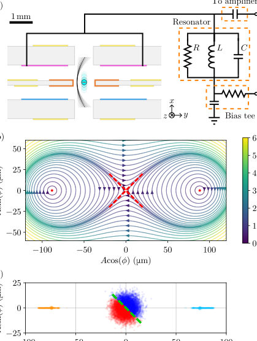
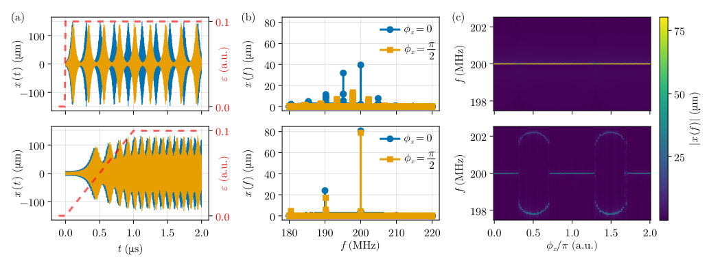

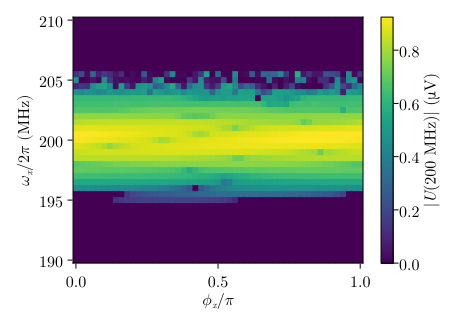
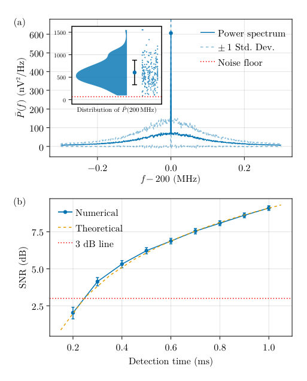
Summary. This paper proposes a new method for detecting single electrons in Paul traps by using a ramped parametric drive to lock the electron's frequency during the transient regime. This approach overcomes the limitations of traditional steady-state detection, such as frequency fluctuations and signal broadening. The method enables faster and more robust nondestructive readout, essential for electron-based quantum information processing.
Why it may be interesting. It provides a novel way to utilize transient dynamics rather than steady-state assumptions to achieve robust frequency-locking, which is highly relevant for high-fidelity readout in trapped-particle quantum technologies.
Main problem. The nondestructive detection of single-electron motion in Paul traps is hindered by motional frequency fluctuations caused by trap anharmonicities and RF field instabilities.
Main result. A controlled ramp of the parametric drive strength effectively locks the electron's motional frequency in the transient regime, providing a robust and fast readout method resilient to noise and micromotion.
Method. The study uses numerical simulations of 3D electron dynamics, comparing instantaneous versus ramped parametric driving protocols using high-order stochastic differential equation solvers.
Model / system. A single electron trapped in a three-layer PCB Paul trap, coupled to an RLC resonator for image current detection, modeled with nonlinear oscillator dynamics including 6th-order anharmonic terms.
Key observables. Image current (induced voltage), electron motion amplitude and phase, power spectrum of the resonator voltage, and Signal-to-Noise Ratio (SNR).
Important parameters / regimes. Secular frequency of 2pi x 200 MHz, driving strength epsilon = 0.1, temperature T = 4 K, and a parametric drive frequency of approximately twice the secular frequency.
Assumptions / limitations. The model uses a pseudopotential approximation and neglects motional cross-coupling between different axes.
Figures summary. Fig 1 shows the trap geometry and phase-space trajectories of the separatrix; Fig 2 compares instantaneous vs. ramped driving in time and frequency domains; Fig 3 demonstrates robustness to frequency detuning; Fig 5 shows the probability density distribution of voltage power density.
Paper structure. The paper introduces the detection problem, describes the PCB trap platform and RLC circuit, presents the nonlinear oscillator model, compares driving protocols (instantaneous vs. ramped), analyzes noise impact and statistical distributions, and concludes with implications for experimental realization.
Nondestructive detection of single-electron motion is crucial for quantum information processing with electrons trapped in Paul traps. The standard approach in Penning traps is to detect the image current induced on the trap electrodes by the electron's oscillatory motion. However, applying this approach in Paul traps for single electrons is currently hindered by motional frequency fluctuations arising from trap anharmonicities and instabilities in the rf trapping field. In this work, we propose a robust detection scheme exploiting the transient dynamics of parametric driving to overcome these limitations. Distinct from traditional steady-state approaches, our method focuses on the transient regime to break the temporal constraints imposed by steady-state assumptions, thereby enabling fast readout. We show that a controlled ramp of the parametric drive effectively locks the frequency of the electron motion in the transient regime, rendering the signal highly resilient to realistic experimental noise and inherent micromotion. This work paves the way for the experimental realization of nondestructive detection of single-electron motion in Paul traps.
Authors: Matthew Chilcott, Laurits N. Stokholm, Matthew Cloutman, J. Susanne Otto, Amita B. Deb, Niels Kjærgaard
Type: both · Category: other · PDF: https://arxiv.org/pdf/2605.14529v1
Analysis basis: full PDF text, analyzed in chunks
Topic relevance: 🔥 quantum optics experiment 4/5 · quantum measurements 3/5
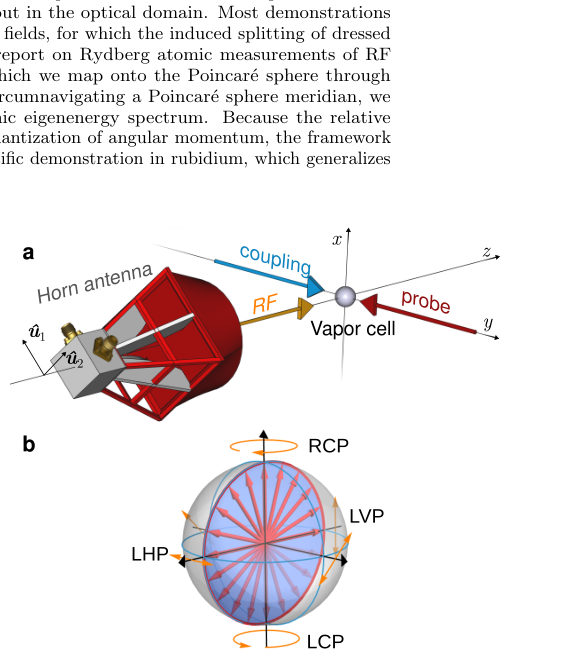
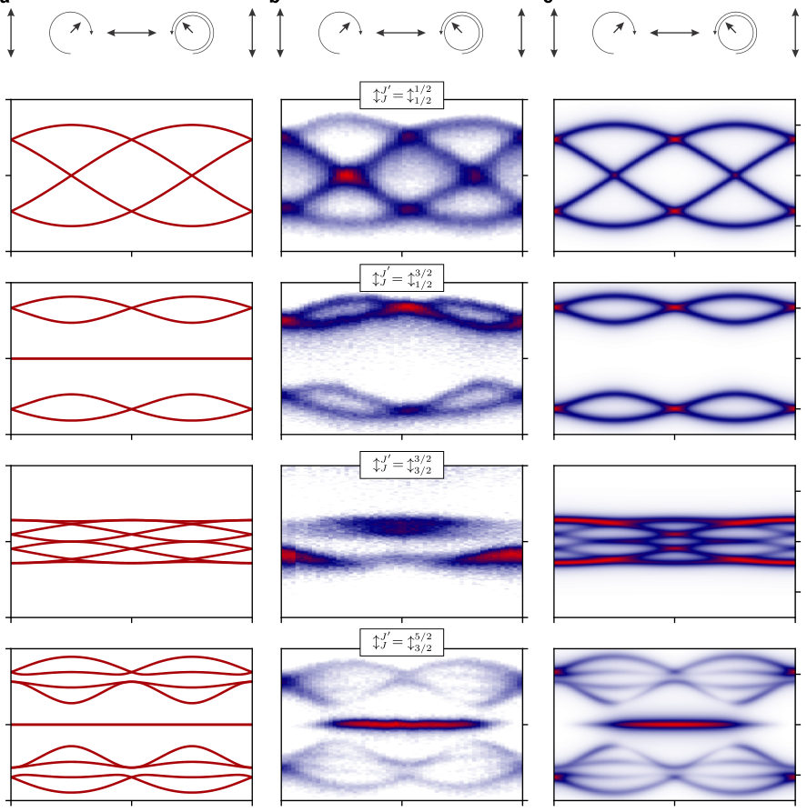
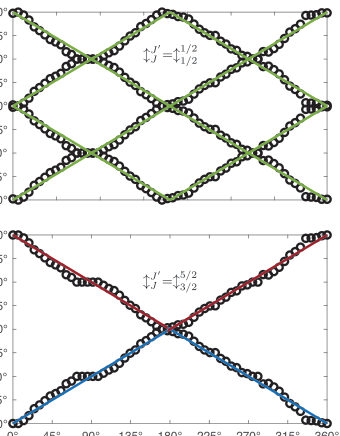
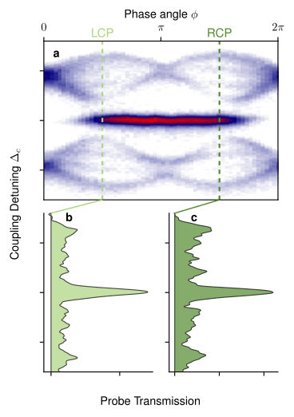
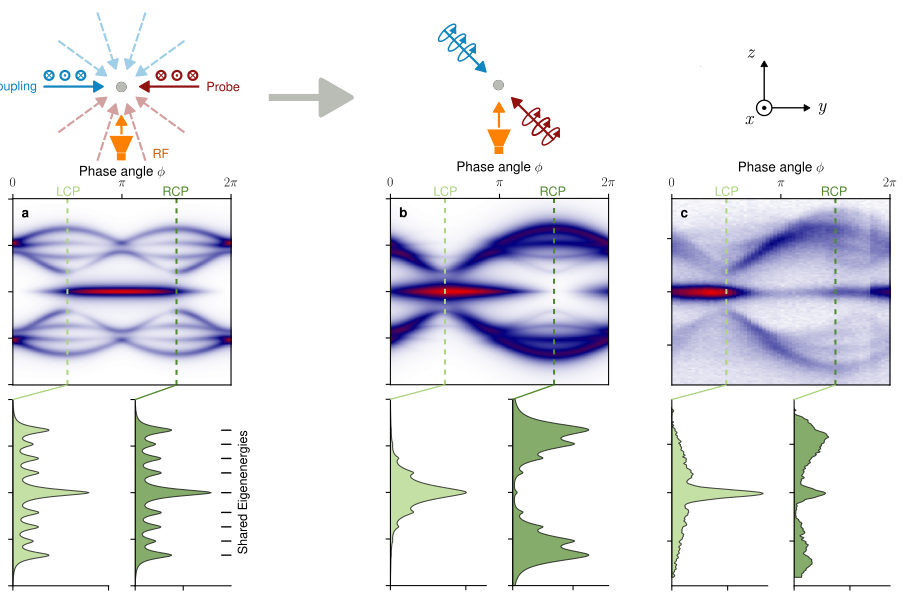
Summary. This paper presents a method for complete RF-polarimetry using Rydberg atoms as an optically-wired sensor. By analyzing the spectroscopic fingerprints of RF-dressed atoms, the researchers can determine the full polarization state of an RF field without needing calibration or metallic antennas. This approach leverages the fundamental quantization of angular momentum to create a universal sensing framework.
Why it may be interesting. This work is highly relevant for quantum optics and AMO physics as it demonstrates a novel way to use the internal quantum structure (angular momentum quantization) of atoms to perform high-precision, non-invasive sensing of external classical fields.
Main problem. Developing a complete, calibration-free RF-polarimetry method to determine the full Stokes vector of an RF field using Rydberg atoms without the field distortions caused by metallic antennas.
Main result. The researchers demonstrated that the state of polarization (SOP) of an RF field is encoded in the spectroscopic fingerprints of Rydberg atoms, allowing for universal, calibration-free measurement of the full Stokes vector.
Method. The method uses Electromagnetically Induced Transparency (EIT) in a Rubidium vapor cell to probe RF-dressed Rydberg states, employing an analytical inversion of the EIT spectra based on eigenvalue envelope ratios.
Model / system. An optically-wired atomic sensor using 87Rb atoms in a vapor cell, specifically utilizing Rydberg states (n approx 50) and a ladder-type EIT scheme with 780 nm and 480 nm lasers.
Key observables. Atomic eigenenergy spectrum, EIT peak positions, and the eigenvalue envelope ratio R.
Important parameters / regimes. RF phase angle (phi), RF polarization (linear, circular, elliptical), and principal quantum number (n).
Assumptions / limitations. The use of the dipole approximation and the rotating wave approximation (RWA).
Figures summary. Figures illustrate the mapping of phase angles to EIT spectra, the identification of mathematical ambiguities in the phase angle extraction, and the use of peak intensity/symmetry breaking to resolve those ambiguities.
Paper structure. The paper introduces the problem of RF-polarimetry, describes the Rydberg-based experimental platform, presents the analytical framework for mapping SOP to the Poincaré sphere, details the inversion method and ambiguity resolution, and concludes with experimental demonstrations in Rubidium.
Rydberg atomic electrometry leverages the extreme sensitivity of highly excited atoms for calibration-free electric field measurements. The technique uses a non-metallic vapor cell to link properties of an RF field to a spectroscopic readout in the optical domain. Most demonstrations have so far focused on detecting linearly-polarized fields, for which the induced splitting of dressed atomic levels is rotationally invariant. Here we report on Rydberg atomic measurements of RF fields in a general state of polarization (SOP) which we map onto the Poincaré sphere through spectroscopic fingerprints. For a Stokes vector circumnavigating a Poincaré sphere meridian, we witness a continuous transformation of the atomic eigenenergy spectrum. Because the relative positions of eigenenergies are locked in place by quantization of angular momentum, the framework is universal and calibration free. We provide a specific demonstration in rubidium, which generalizes to all systems with a single valence electron.
Authors: Yongxin Song, Johannes Knörzer, Kieran Dalton, Andreas Wallraff, Jean-Claude Besse
Type: experiment · Category: quantum information and computing · PDF: https://arxiv.org/pdf/2605.14656v1
Analysis basis: full PDF text, analyzed in chunks
Topic relevance: 🔥 QC/QI experiment 4/5 · entanglement & information structure 1/5 · quantum measurements 1/5
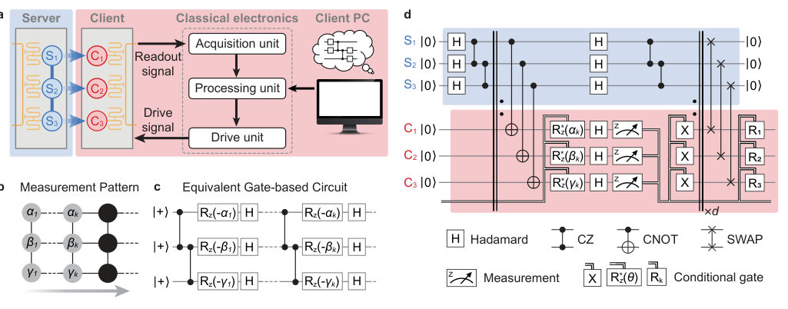
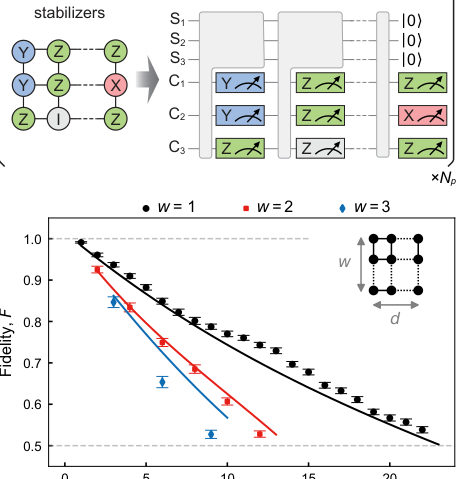
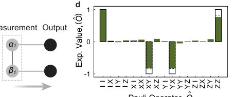
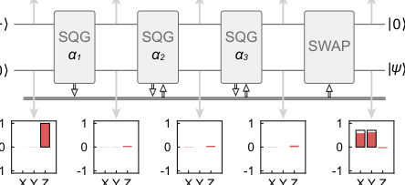
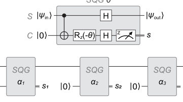
Summary. This paper demonstrates the first implementation of a blind quantum computation protocol on a modular superconducting processor. By using a server-client architecture, the researchers showed that a client can run algorithms like Deutsch-Jozsa without revealing the task or results to the server. The study quantifies extremely low information leakage, proving the feasibility of secure, privacy-preserving cloud quantum computing.
Why it may be interesting. It demonstrates a practical implementation of a quantum communication/computing protocol (BQC) using a modular hardware architecture, which is highly relevant to the development of quantum networks and distributed quantum computing.
Main problem. The lack of privacy for algorithms and data in cloud-based quantum computing. The paper aims to demonstrate a proof-of-principle for Blind Quantum Computation (BQC) on a modular superconducting processor.
Main result. Successful execution of a measurement-based BQC protocol and the Deutsch-Jozsa algorithm on a modular architecture, with verified negligible information leakage (Holevo information of 2.3e-4 bits) to the server.
Method. A measurement-based quantum computation (MBQC) protocol where a server prepares a cluster state and a client performs adaptive single-qubit rotations and measurements, using iterative state transfer between modules.
Model / system. A modular superconducting processor consisting of two flip-chip-bonded modules (a server and a client), each hosting three flux-tunable transmon qubits connected via static qubit-qubit couplers.
Key observables. Cluster state fidelity, process fidelity of T-gates and two-qubit gates, Holevo information for leakage analysis, and Pauli expectation values.
Important parameters / regimes. Median T1 of 43 us, median T2* of 39 us, single-qubit gate error of 0.09%, and two-qubit gate error of 0.8%.
Assumptions / limitations. Assumes no information leakage via unintended hardware side channels like crosstalk and assumes the absence of unintended pathways between modules.
Figures summary. Figure 1 shows the experimental principle and circuit diagrams; Figure 2 shows cluster state fidelity estimation; Figure 3 details measurement-based gate implementation; Figure 4 shows the Deutsch-Jozsa algorithm execution; Figure 5 verifies blindness via Pauli operators; Figure 6 illustrates single-qubit rotation patterns; Figure 7 provides qubit coherence and error rate distributions; Figure 8 shows the experimental setup schematic.
Paper structure. The paper introduces the privacy problem in cloud computing, describes the modular hardware architecture, details the MBQC/BQC protocol implementation, presents results for cluster state generation and gate fidelities, demonstrates the Deutsch-Jozsa algorithm, quantifies information leakage, and concludes with an error decomposition and scalability analysis.
Current cloud-based quantum processors offer access to advanced hardware hosted on a remote server, but do not guarantee data or algorithm privacy. Blind quantum computation provides information-theoretic privacy by enabling a client to execute an algorithm without disclosing information about either the task or the final result. Here, we execute a measurement-based blind quantum computation protocol on a superconducting processor comprising two flip-chip-bonded modules, one acting as a server and the other as a client. The server generates a two-dimensional cluster state and forwards it to the client. Using this resource, the client implements a universal gate set with only adaptive single-qubit rotations and measurements. To illustrate this approach, we execute a three-qubit instance of the Deutsch-Jozsa algorithm. We analyze the server's quantum state after each rotation of a measurement-based single-qubit gate to verify that negligible information about the computation is revealed to the server, consistent with the one-way flow of information that guarantees blindness. This proof-of-principle demonstration establishes key elements of blind quantum computation in superconducting-circuit architectures, indicating that intermediate-scale implementations of blind protocols may become feasible with realistic near-term improvements in gate fidelities.
Authors: Filippo Girardi, Giacomo De Palma, Ludovico Lami
Type: theory · Category: quantum information and computing · PDF: https://arxiv.org/pdf/2605.15114v1
Analysis basis: full PDF text, analyzed in chunks
Topic relevance: 🔥 entanglement & information structure 4/5 · methods for driven-dissipative 2/5
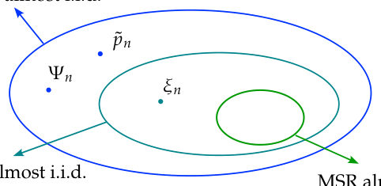
Summary. The paper introduces new mathematical frameworks for 'almost i.i.d.' quantum sources to better model real-world systems with local correlations. It proves that these new definitions form a strict hierarchy, ranging from the highly constrained MSR model to a looser definition based on average k-body marginals.
Why it may be interesting. This is highly relevant for researchers in open quantum systems and many-body dynamics, as it provides a more realistic mathematical framework for studying quantum processes where the assumption of independent, memoryless noise or sources is physically unrealistic.
Main problem. The standard i.i.d. assumption in quantum information theory is often too restrictive for practical, physical settings. The paper seeks to formalize and compare alternative mathematical definitions of 'almost i.i.d.' sources that better represent real-world devices with memory or local perturbations.
Main result. The authors establish a strict hierarchical relation between three notions of almost i.i.d. states: MSR almost i.i.d. is the strictest, followed by Wasserstein almost i.i.d., with weakly almost i.i.d. being the loosest. They provide explicit counter-examples to prove that these inclusions are strict.
Method. The study utilizes quantum Wasserstein distance (order 1), trace distance, and analysis of k-body marginals. Mathematical tools include the symmetric group, type theory, and multilinear polynomials to establish bounds and separations.
Model / system. The paper considers n-partite quantum states (and classical probability distributions) acting on a Hilbert space H^n, specifically investigating sequences of states that deviate from the ideal i.i.d. structure.
Key observables. von Neumann entropy, conditional entropy, squashed entanglement, k-body marginals, and quantum Wasserstein distance.
Important parameters / regimes. n (number of subsystems), r (number of defects), k (size of local marginals), and the scaling regime where r = o(n).
Assumptions / limitations. The initial definitions and notation assume a finite-dimensional Hilbert space.
Paper structure. The paper begins by introducing two new definitions of almost i.i.d. states (Wasserstein and weakly almost i.i.d.) relative to the MSR definition. It then explores their properties, proves the hierarchical inclusion of the three classes, and concludes with explicit constructions of counter-examples to demonstrate the strictness of the hierarchy.
Independent and identically distributed (i.i.d.) states are ubiquitous in quantum information theory. However, in a practical setting, the i.i.d. assumption is too stringent, and possibly not realistic. A physically more compelling class of 'almost i.i.d.' sources was recently proposed by [Mazzola/Sutter/Renner, arXiv:2603.15792]. In this paper, we introduce two alternative definitions of almost i.i.d. states, based on the normalised quantum Wasserstein distance and on the idea of looking at the average $k$-body marginal. We explore some basic properties of these notions and prove a strict hierarchical relation among them, with Mazzola et al.'s notion being the strictest, the one based on $k$-body marginals the loosest, and the one based on the quantum Wasserstein distance in between. Strict separation is established by means of explicit examples.
Authors: Nicholas Gillespie, Christopher T. -K. Lew, Ryan Kinsella, Andy Sayers, Brant Gibson, David A. Broadway, Jean-Philippe Tetienne
Type: theory · Category: quantum information and computing · PDF: https://arxiv.org/pdf/2605.14244v1
Analysis basis: full PDF text, analyzed in chunks
Topic relevance: 🔥 spintronics-quantum-optics interface 4/5 · quantum measurements 2/5
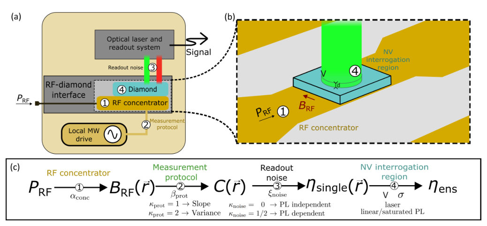
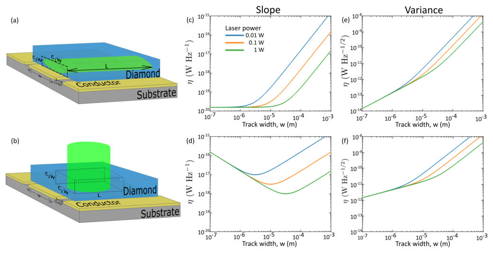
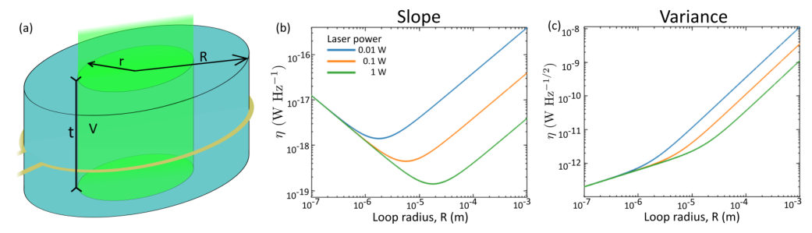
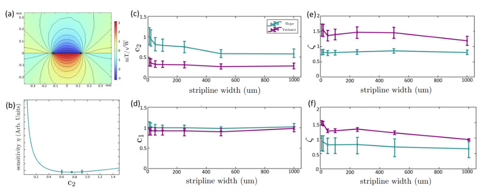
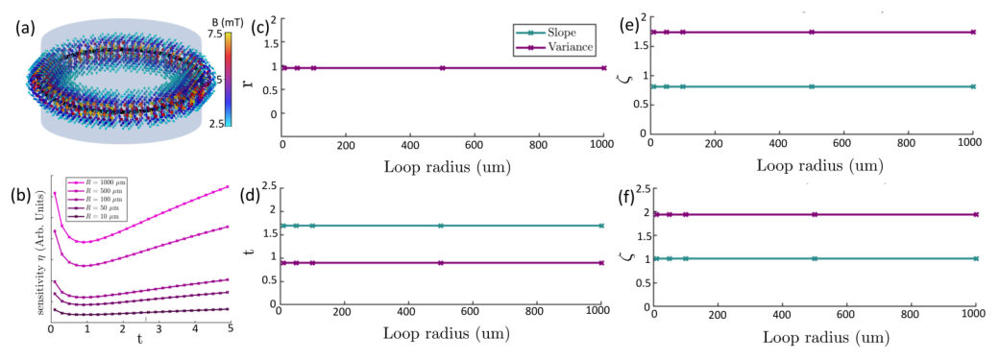
Summary. This paper provides a theoretical framework for optimizing the power sensitivity of NV-based RF detectors. It reveals that miniaturizing the RF-spin interface can improve power sensitivity, offering a new design paradigm for broadband quantum RF sensing.
Why it may be interesting. This work is highly relevant to quantum optics and sensing, as it provides a fundamental framework for optimizing the interface between classical electromagnetic signals and quantum spin ensembles, which is critical for developing scalable quantum-enhanced RF sensors.
Main problem. Optimizing the power sensitivity of broadband radiofrequency (RF) detectors based on nitrogen-vacancy (NV) centers in diamond, specifically shifting focus from magnetic field sensitivity to input RF power sensitivity.
Main result. The study finds that power sensitivity scales inversely with the physical dimensions of the RF-spin interface, meaning smaller structures and smaller probed NV volumes can actually improve power sensitivity, contrary to traditional magnetic field sensing optimization.
Method. The authors use an analytical framework to derive scaling laws for power sensitivity across different noise and detection regimes, supplemented by COMSOL and CST Studio Suite numerical simulations to validate field distributions and optimize geometry.
Model / system. The system consists of nitrogen-vacancy (NV) center ensembles in diamond coupled to RF concentrators, such as coplanar waveguides (CPW) or loop antennas, interrogated via laser-induced photoluminescence.
Key observables. Power sensitivity (expressed in W/Hz for slope-detection and W/sqrt(Hz) for variance-detection), RF magnetic field distribution, and PL contrast.
Important parameters / regimes. CPW track width (w), loop antenna radius (R), NV density, photon shot noise limit, and the distinction between linear and saturated photoluminescence regimes.
Assumptions / limitations. Assumes uniform NV density and laser intensity over the probe volume, and uses simplified models for the magnetic field enclosure and optimization constants.
Figures summary. Figure 1 shows the generalized detector structure; Figure 2 illustrates parallel vs. perpendicular laser geometries and sensitivity vs. width; Figure 4 presents COMSOL simulations of magnetic field distribution and optimization of probe volume parameters; Figure 5 shows CST simulations of loop antenna performance.
Paper structure. The paper begins by defining the problem of power sensitivity, moves to an analytical derivation of scaling laws for different geometries and protocols, presents numerical validation via electromagnetic simulations, and concludes with parameter estimates for achievable sensitivities.
Nitrogen-vacancy (NV) centres in diamond can be used to detect radiofrequency (RF) signals through coupling of the RF magnetic field with the NV spins, combined with optical readout of the spin state. The sensitivity of such RF detectors has so far been mainly studied in terms of magnetic field sensitivity, which is relevant when the RF signal is generated by a near-field source. However, for applications where the RF input is delivered externally, a more relevant quantity is the sensitivity in terms of the input RF power. Here we theoretically analyse the power sensitivity of NV-based RF detectors as a function of the RF-spin interface geometry. We derive scaling laws of the power sensitivity for both slope-detection and variance-detection RF sensing protocols, and for various noise regimes. We find that, in most scenarios, the power sensitivity scales inversely with the characteristic physical dimension of the RF-spin interface, for instance the width of a coplanar waveguide or the diameter of a loop antenna. In other words, the smaller the structure and the probed NV volume, the better the power sensitivity, which is contrary to the case of magnetic field sensitivity. Lastly, we numerically estimate that photon shot noise limited sensitivities of 10^{-20} W Hz^{-1} (slope) and 10^{-12} W Hz^{-1/2} (variance) are achievable. This work lays the groundwork for further optimisation of NV-based RF detectors.
Authors: Yuto Taniguchi, Ryo Kato, Tatsuya Amano, Hirotake Itoh, Yohei Kawakam, Yuto Nakamura, Hideo Kishida, Christian Bernhard, Jure Demsar, Takahiko Sasaki, Terukazu Nishizaki, Kenji Yonemitsu, Shinichiro Iwai
Type: experiment · Category: strongly correlated electrons · PDF: https://arxiv.org/pdf/2605.14238v1
Analysis basis: full PDF text, analyzed in chunks
Topic relevance: 🔥 non-equilibrium dynamics 4/5 · non-equilibrium universality 2/5
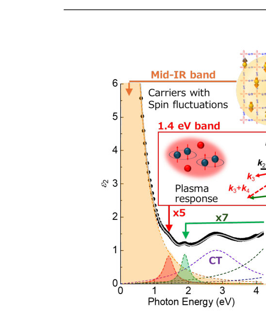
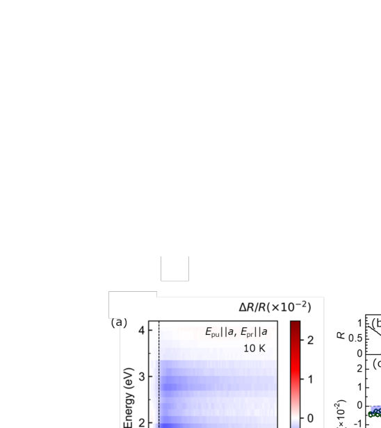
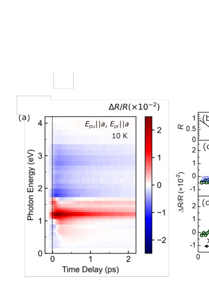
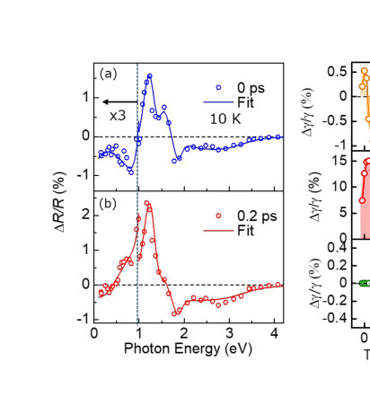
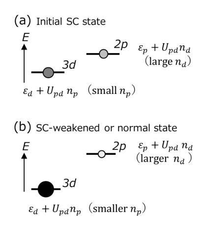
Summary. This paper uses ultrafast spectroscopy to resolve the initial stages of quasiparticle generation in YBCO. It reveals that electron-electron Umklapp scattering occurs almost instantaneously, followed by a 90 fs decoupling of quasiparticles from spin fluctuations. These findings offer new clues regarding the pairing mechanism in high-temperature superconductors.
Why it may be interesting. The paper provides high-resolution insights into many-body dynamics, specifically the non-equilibrium decoupling of particles from a bosonic (spin-fluctuation) background, which is relevant to the study of driven many-body systems.
Main problem. Understanding the ultrafast dynamics of quasiparticle generation and the decoupling of quasiparticles from spin fluctuations following a rapid quench of superconductivity in high-Tc cuprates.
Main result. The study identifies an initial enhancement of electron-electron Umklapp scattering within a few femtoseconds, followed by an ultrafast decoupling of quasiparticles from the spin-fluctuation background on a 90 fs timescale.
Method. Ultrafast broadband (0.16-4.1 eV) and near single-cycle (6 fs) transient reflectivity spectroscopy using pump-probe techniques.
Model / system. Optimally doped YBCO (YBa2Cu3Oy, y=6-6.94) single crystals, analyzed using a Drude-Lorentz model and the three-band Hubbard (Emery) model context.
Key observables. Transient reflectivity (delta R/R), oscillator strengths (f), scattering rates (gamma), and central frequencies (omega) of various electronic bands.
Important parameters / regimes. Temporal scales of <10 fs, 90 fs, and 2 ps; energy scales including the mid-IR band (0.1-1 eV), 1.4 eV band, and ZRS band (~1.9 eV).
Assumptions / limitations. The low-frequency response in the superconducting state is approximated with a Drude term, and the Drude-Lorentz model parameters are assumed to be uniform within the layers of a multilayer film model.
Figures summary. Fig 1 shows the steady-state permittivity spectrum; Fig 2 shows the time evolution of delta R/R at 10 K; Fig 3 presents high-resolution temporal dynamics using 6 fs pulses; Fig 4/S-series show Drude-Lorentz parameter evolution and spectral analysis.
Paper structure. Introduction to the problem of quasiparticle generation, experimental setup description, steady-state spectral identification, results of broadband and ultrafast spectroscopy in both SC and normal states, and discussion of the physical mechanisms (Umklapp scattering and Hartree shift).
Understanding how quasiparticles are generated following a rapid quench of superconductivity in high-Tc cuprates is a key unresolved problem in nonequilibrium superconductivity. Here we resolve these processes in optimally doped YBCO [YBa2Cu3Oy(y=6.94, Tc=92 K)] using broadband (0.16 -4.1 eV, ca. 100 fs) and nearly single-cycle (6 fs) transient reflectivity spectroscopy. We show that within a few femtosecond, enhanced electron-electron Umklapp scattering dominates, signaling a transient modulation of long-range Coulomb interactions on the eV scale. This regime is followed by a rapid suppression of the scattering rate of the mid-infrared absorption associated with carriers dressed by spin fluctuations. We attribute this observation to an ultrafast decoupling of quasiparticles from the spin-fluctuation background, occurring on a 90 fs timescale set by the inverse optical gap. These findings reveal the correlated many-body dynamics underlying quasiparticle generation in cuprates and provide further clues for unconventional pairing mechanism.
Authors: Yuzhen Zhang, Isaac H. Kim, Yimu Bao, Sagar Vijay
Type: theory · Category: quantum information and computing · PDF: https://arxiv.org/pdf/2605.15150v1
Analysis basis: full PDF text, analyzed in chunks
Topic relevance: 🔥 entanglement & information structure 4/5
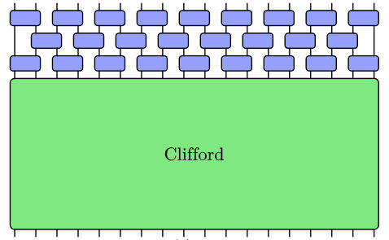
Summary. This paper demonstrates that non-Abelian topological orders are fundamentally characterized by extensive, long-range magic that cannot be eliminated by local operations. It establishes that stabilizer states are insufficient to represent these phases, providing a new resource-theoretic way to distinguish topological orders.
Why it may be interesting. It provides a fundamental link between topological order and the resource theory of magic, which is crucial for understanding the complexity of preparing non-Abelian states and the robustness of non-Clifford resources in many-body systems.
Main problem. The paper investigates whether non-Abelian topological orders possess intrinsic, long-range 'magic' (non-Clifford resources) that cannot be removed by constant-depth local unitary circuits.
Main result. The authors prove that ground states and low-energy states of non-Abelion string-net models possess extensive long-range magic, and establish a no-go theorem stating that stabilizer states cannot realize these non-Abelian phases.
Method. The study utilizes the entanglement bootstrap framework, resource theory of magic, and information-theoretic tools like fidelity bounds and the analysis of information convex sets.
Model / system. The primary models are non-Abelian and Abelian string-net models, higher-dimensional quantum double models, and stabilizer states/projection states.
Key observables. Long-range magic (LRM), robustness of magic, mutual information, and fusion space dimensions.
Important parameters / regimes. Circuit depth (d), system size (n), qudit dimension (q), and energy density (epsilon).
Assumptions / limitations. The results assume the existence of reference states satisfying the entanglement bootstrap axioms and focus on the regime of constant-depth local unitary transformations.
Figures summary. Figure 2 illustrates the patch construction method; Figure 3(a) shows Abelian string-net phases; Figure 4 shows the transformation of states by depth-d circuits; Figure 5 depicts n-holed disks and topological charge measurement; Figure 6 shows the generation of stabilizers on a ball from smaller balls.
Paper structure. The paper begins by defining long-range magic and the problem of non-Abelian complexity, then presents a no-go theorem for stabilizer states using the entanglement bootstrap, extends these findings to low-energy states and higher dimensions, and concludes with bounds on magic scaling and implications for quantum complexity.
We show that the low-energy states of non-Abelian topological orders possess extensive magic which is long-ranged, and cannot be eliminated by a constant-depth local unitary circuit. This refines conventional notions of complexity beyond the linear circuit depth which is required to prepare any topological phase, and provides a new resource-theoretic characterization of topological orders. A central technical result is a no-go theorem establishing that stabilizer states--even up to constant-depth local unitarie--cannot approximate low-energy states of non-Abelian string-net models which satisfy the entanglement bootstrap axioms. Moreover, we show that stabilizer-realizable Abelian string-net phases have mutual braiding phases quantized by the on-site qudit dimension, and that any violation of this condition necessarily implies extensive long-range magic. Extending to higher spatial dimensions, we argue that any state obeying an entanglement area law and hosting excitations with nontrivial fusion spaces must exhibit extensive long-range magic. This applies, in particular, to ground-states and low-energy states of higher-dimensional quantum double models.
Authors: M. Y. Abd-Rabbou, Cong-Feng Qiao
Type: theory · Category: quantum information and computing · PDF: https://arxiv.org/pdf/2605.14924v1
Analysis basis: full PDF text, analyzed in chunks
Topic relevance: entanglement & information structure 3/5 · quantum measurements 3/5 · correlated / nonlocal dissipation 2/5 · measurement-induced transitions 2/5 · non-equilibrium dynamics 2/5
Summary. This paper proposes a method to teleport extractable work across a distance using a shared surface code. It shows that while quantum error correction protects the work from thermal noise, the growing cost of maintaining the error-correcting infrastructure imposes a fundamental limit on how far the work can be sent.
Why it may be interesting. It bridges quantum error correction with thermodynamics, demonstrating how topological order can be used as a resource for non-local work extraction in the presence of thermal noise.
Main problem. Investigating whether ergotropy (extractable work) can be nonlocally transferred at finite temperatures using a Maxwell demon mechanism supported by surface-code quantum error correction.
Main result. The protocol achieves exponential protection of transferred ergotropy below a topological threshold and identifies a thermodynamic horizon (N_max) beyond which the quadratic infrastructure costs make the process unprofitable.
Method. The authors use a five-stage protocol involving encoding, measurement, classical communication, decoding (via MWPM), and extraction, supported by Stim and PyMatching simulations.
Model / system. A rotated surface code on a rectangular lattice with two spatially separated batteries (Alice and Bob) subject to thermal fluctuations and depolarizing noise.
Key observables. Net ergotropy (W_net), success probability (P_succ), entropy production (Delta S_total), and information fraction (f).
Important parameters / regimes. Topological threshold (p_th), thermodynamic critical error rate (p_c), separation distance (N), and infrastructure cost scaling (N^2).
Assumptions / limitations. The protocol assumes a causal constraint where syndrome information must travel at a finite signal speed, leading to quadratic scaling of monitoring costs.
Figures summary. Figure 2 shows success probability vs. code distance; a phase diagram maps net ergotropy as a function of error rate and information fraction.
Paper structure. The paper introduces the problem of nonlocal ergotropy transfer, defines the surface code model and protocol, presents numerical results on error thresholds and profitability, and concludes with a thermodynamic analysis of the cost-benefit trade-off.
We introduce a nonlocal Maxwell demon teleporting ergotropy at finite temperature via classical communication and a shared surface code. The teleported ergotropy is exponentially protected below a topological threshold. We identify a thermodynamic phase transition separating a profitable demon phase from a thermal phase. A quadratic infrastructure cost strictly enforces the second law, imposing a fundamental thermodynamic horizon on separation distance. This establishes quantum error correction as a resource for nonlocal thermodynamics beyond fault-tolerant computation.
Authors: Francesco Mazza, Claudio Pellitteri, Angela Sara Cacciapuoti, Marcello Caleffi
Type: theory · Category: quantum information and computing · PDF: https://arxiv.org/pdf/2605.15029v1
Analysis basis: full PDF text, analyzed in chunks
Topic relevance: entanglement & information structure 3/5 · correlated / nonlocal dissipation 2/5 · methods for driven-dissipative 2/5 · quantum measurements 2/5
Summary. The paper proposes a new way to use multipartite entanglement in quantum networks by treating it as a programmable substrate that can be reconfigured into different network topologies. By using a protocol called 'Entanglement Rolling,' users can dynamically create Bell pairs or GHZ states from a shared resource. The study demonstrates that this method is efficient and robust against common types of quantum noise.
Why it may be interesting. It provides a systematic way to manage multipartite entanglement as a programmable resource, which is highly relevant for the development of scalable quantum internet architectures and the control of distributed quantum information.
Main problem. Developing a resource-driven framework to treat multipartite entanglement as a programmable 'whatever channel' that can be reconfigured into various entanglement-connectivity graphs via LOCC.
Main result. The introduction of the 'Entanglement Rolling' protocol, which maximizes the number of concurrent Bell pairs extracted from a GTL resource state, and a proof that this approach remains resilient under realistic depolarizing and dephasing noise.
Method. A mathematical framework using graph states and the Noisy Stabilizer Formalism (NSF) to derive closed-form noise maps and analyze the reconfiguration of resource states through Pauli measurements.
Model / system. A hierarchical quantum network model consisting of Tier-2 orchestration nodes and Tier-1 peer nodes, utilizing Generalized Tree-like (GTL) graph states as the shared entanglement resource.
Key observables. Entanglement fidelity (F), number of extractable Bell pairs/GHZ states, and peer proximity.
Important parameters / regimes. Bridge rank (r), bridge degree (kappa_b), depolarizing noise parameter (p), and dephasing time (T).
Assumptions / limitations. The resource states are restricted to two-colorable GTL graph states, and noise is modeled as independent single-qubit Pauli noise.
Figures summary. Figure 1 shows the three-tier reconfiguration process; Figure 2 depicts the hierarchical network model; Figure 3 illustrates the Entanglement Rolling effect; Figure 4 shows the two-stage extraction process; Figure 5 visualizes noise impact on rolling; Figure 6 presents heatmaps and curves of fidelity thresholds.
Paper structure. The paper begins by defining the resource-driven framework and the 'whatever channel' concept, introduces the GTL graph state model and structural parameters, formalizes the Entanglement Rolling protocol and its topological effects, provides a noise analysis using the Noisy Stabilizer Formalism, and concludes with numerical validation of fidelity under realistic noise.
Shared multipartite entanglement defines a ``whatever channel'', i.e., a latent communication substrate that does not determine a priori which end-to-end entangled links are activated, but can be configured to support different entanglement-connectivity graphs through Local Operations and Classical Communication (LOCC). Building on this, we propose a resource-driven framework in which multipartite entanglement is treated as a programmable resource that induces a space of admissible entanglement-graph configurations. Within this framework, connectivity provisioning emerges as a particular instance of a more general resource reconfiguration process. To support this paradigm, we introduce a set of structural design parameters that characterize the operational degrees of freedom of the resource and define the admissible transformations independently of the specific mechanism used to realize them. We then formalize Entanglement Rolling as a measurement-based protocol that operates over the induced configuration space, enabling the systematic reconfiguration of the shared resource across a family of multipartite states. Finally, we analyze the proposed framework under realistic noise conditions. Leveraging the Noisy Stabilizer Formalism (NSF), we derive closed-form noise maps that characterize the effect of noise on the resource transformations and show that the proposed approach maintains reliable performance under relevant noise processes.
Authors: Wolfgang Mauerer, Manuel Schönberger
Type: both · Category: disordered systems and neural networks · PDF: https://arxiv.org/pdf/2605.14719v1
Analysis basis: full PDF text, analyzed in chunks
Topic relevance: non-equilibrium dynamics 3/5 · entanglement & information structure 2/5 · exotic spin models in light-matter 2/5 · non-equilibrium universality 2/5
Summary. This paper introduces an open-source computational toolbox designed to analyze the physical properties of quantum annealing applied to database management problems. By simulating energy gaps and spin dynamics, the authors show that query optimization problems possess a complexity structure intermediate between simple ferromagnets and complex spin glasses. This work establishes a foundation for the co-design of quantum algorithms and database systems.
Why it may be interesting. It provides a bridge between combinatorial optimization and the physics of phase transitions, specifically studying how the ruggedness of energy landscapes in disordered systems (like spin glasses) impacts the success of adiabatic protocols.
Main problem. The lack of understanding regarding how the physical behavior of quantum annealing relates to the structure and difficulty of database management (DBMS) optimization problems.
Main result. The authors developed a computational toolbox that demonstrates MQO problems exhibit structured evolution intermediate between easy ferromagnetic models and hard spin-glass (SK) models, characterized by specific spectral gap behaviors and spin polarization patterns.
Method. A physics-informed numerical analysis pipeline using High-Performance Computing (HPC) and matrix-free eigenvalue solvers (SLEPc/PETSc) to simulate the dynamics of time-dependent Hamiltonians.
Model / system. A time-dependent Hamiltonian H(s) interpolating between a driver Hamiltonian and a problem-specific Ising/QUBO Hamiltonian, applied to Multi-Query Optimization (MQO) and Sherrington-Kirkpatrick (SK) spin-glass models.
Key observables. Minimum spectral gap, energy eigenvalues and eigenstates, spin expectation values, spin-spin correlations, and transition matrix elements.
Important parameters / regimes. Annealing parameter (s), system size (N), energy gaps, and the adiabatic condition ratio.
Assumptions / limitations. The analysis uses a truncated low-energy subspace approximation, which may fail near avoided crossings or in dense spectra; the study focuses on standard linear annealing schedules.
Figures summary. Figure 1 shows the toolbox pipeline; Figures 2-3 compare spectral gaps and their locations for SK and MQO; Figures 4-5 show energy branch evolution; Figure 6 analyzes the adiabatic condition ratio; Figure 7 shows spin trajectories; Figure 9 displays spin-spin correlation patterns.
Paper structure. The paper introduces the disconnect between DBMS and quantum physics, presents the toolbox implementation and numerical methods, applies the tool to compare MQO against SK and Ferromagnetic models, and concludes with structural insights into optimization dynamics.
The application of quantum computing to data management has attracted growing interest, yet remains constrained by a limited understanding of how the physical behaviour of quantum devices relates to the structure and difficulty of database problems. In particular, evaluating quantum annealing approaches for combinatorial optimisation, which is central to many data management tasks, poses significant challenges beyond the scope of conventional empirical and complexity-theoretic methods. We present a computational toolbox for the systematic numerical analysis of quantum annealing processes derived from data management problem formulations. Adopting a physics-informed perspective, the toolbox enables the study of spectral and dynamical properties -- such as energy gaps and eigenstate structure -- that are inaccessible through direct hardware measurements, yet essential for understanding computational hardness and scaling behaviour. Our approach further provides derived quantities and visualisation techniques that support the interpretation of optimisation dynamics, the identification of structural similarities to canonical physical models, and the construction of reduced effective descriptions. By bridging methodological gaps between quantum computing and database systems research, this work establishes a principled foundation for evaluating quantum approaches and guiding future co-design efforts.
Authors: Mohd Asad Siddiqui
Type: theory · Category: quantum information and computing · PDF: https://arxiv.org/pdf/2605.14395v1
Analysis basis: full PDF text, analyzed in chunks
Topic relevance: quantum measurements 3/5 · entanglement & information structure 2/5 · interference shaping light 2/5
Summary. This paper presents a way to detect preparation contextuality using simple interference visibility measurements in multi-path interferometers. It proves that for any n-path system, a specific inequality of visibilities can be violated by qubit states, and shows that larger systems actually make the test easier by lowering the required visibility threshold.
Why it may be interesting. It provides a resource-efficient, scalable method for witnessing fundamental quantum properties like contextuality and coherence using only pairwise measurements, which is highly relevant to quantum optics and photonic quantum information.
Main problem. Developing an operational method to test preparation noncontextuality and basis-independent coherence using standard multi-path interferometry without requiring full state tomography or SWAP tests.
Main result. The paper derives a tight qubit bound for n-path interferometers, $S_n^{max} = n \cos^2(\pi/2n) - 1$, and shows that violations of these visibility-based inequalities witness preparation contextuality.
Method. The author uses Gram matrix positivity and trigonometric parametrization of Bloch vectors to derive overlap inequalities and optimizes the configuration of detector states to find the maximal quantum violation.
Model / system. An n-path interferometer where a quantum particle is prepared in a pure state and coupled to detectors, with the detector states encoded as qubits (e.g., photon polarization).
Key observables. Two-path interference visibility (V_ij) and the n-cycle overlap expression (S_n).
Important parameters / regimes. The visibility threshold (eta_min) required to violate the classical bound, which scales as 1/sqrt(n-1) for large n.
Assumptions / limitations. Ideal symmetric path amplitudes, pure qubit detector states, no higher-order interference, and uniform visibility reduction across all path pairs.
Figures summary. Figure 1 illustrates the optimal Bloch-vector configurations (equally spaced on a great circle) for n=3 and n=4 cases.
Paper structure. The paper introduces the problem of testing noncontextuality, defines the n-path interferometric model, derives the 3-path inequality, generalizes the result to n-paths, performs a robustness analysis for experimental visibility, and compares the method to existing techniques.
We show that standard multi-path interferometry, using only pairwise visibility measurements, provides an operational route to tests of preparation noncontextuality. Under ideal symmetric conditions, interference visibility directly encodes state overlaps, without requiring tomography or SWAP tests. For three paths, any jointly diagonalizable (coherence-free) description must satisfy ${V}_{12}^2+{V}_{23}^2-{V}_{13}^2\le 1$, where ${V}_{ij}$ are two-path visibilities. Pure qubit detector states violate this bound, achieving a maximal value of $5/4$. We generalize to arbitrary $n$-path interferometers and derive the tight qubit bound $S_n^{\max}=n\cos^2(π/2n)-1$ for all $n\ge3$, achieved by coplanar pure qubit states with uniform angular separation $π/n$. A robustness analysis yields explicit experimental thresholds. Under the operational equivalences used in overlap-based generalized noncontextuality frameworks, violations of these visibility inequalities also witness preparation contextuality. For $n$-cycle inequalities, only the pairwise visibilities appearing in the cycle need to be measured.
Authors: Fengzhe Tang, Gangcheng Wang
Type: theory · Category: other · PDF: https://arxiv.org/pdf/2605.14378v1
Analysis basis: full PDF text, analyzed in chunks
Topic relevance: Dicke superradiance 3/5 · entanglement & information structure 2/5 · non-equilibrium dynamics 2/5

Summary. The paper proposes a method to prepare highly entangled Dicke states using a combination of rapid adiabatic passage and counterdiabatic driving. By applying corrections specifically during the parameter turn-off stage, the authors demonstrate that non-adiabatic transitions can be suppressed, allowing for fast and high-fidelity state preparation.
Why it may be interesting. This work is highly relevant for researchers in AMO and quantum control as it provides a scalable strategy to achieve high-fidelity entanglement in atomic ensembles, which is a prerequisite for quantum metrology and quantum information processing.
Main problem. Efficiently preparing high-fidelity Dicke states while suppressing non-adiabatic transitions that occur during fast-sweeping parameter protocols.
Main result. The introduction of counterdiabatic (CD) driving, particularly during the turn-off stage of the protocol, significantly improves the fidelity of Dicke state preparation even at high chirp rates.
Method. The authors combine Rapid Adiabatic Passage (RAP) with a variational approach to approximate the counterdiabatic driving term by minimizing an action functional.
Model / system. A system of N non-interacting two-level atoms governed by a Hamiltonian featuring one-axis twisting (OAT) interaction, a time-dependent longitudinal field, and a transverse driving field.
Key observables. State preparation fidelity and population distribution among Dicke states.
Important parameters / regimes. Chirp rate (alpha), one-axis twisting strength (chi), and driving strength (Omega).
Assumptions / limitations. The effectiveness of the CD correction in the intermediate stage is limited by increasing energy level density as N increases; the derivation assumes the validity of truncated adiabatic gauge potential approximations.
Figures summary. Figure 1 shows energy level dynamics and avoided crossings; Figure 5 compares target state populations for different CD correction scenarios in a two-atom system; Figure 6 shows population transfer efficiency for a four-particle system as a function of chirp rate.
Paper structure. The paper introduces the problem of Dicke state preparation, defines the OAT Hamiltonian and RAP protocol, develops the counterdiabatic driving framework using a variational approximation, analyzes the impact of CD driving across different evolution stages (turn-on, intermediate, turn-off), and provides numerical verification for small particle numbers.
Recently, the technique of counterdiabatic driving, which provides an effective strategy for accelerating adiabatic quantum evolution, has been widely applied in the preparation of many-body quantum states. In this work, we propose a theoretical scheme for the efficient preparation of Dicke states in a system of non-interacting two-level atoms. Our approach leverages the one-axis twisting (OAT) interaction to generate non-classical correlations and combines it with time-dependent external fields to achieve precise control over the dynamics of the system. By employing rapid adiabatic passage (RAP), it demonstrates how the system can be steered from an initial coherent spin state to a target Dicke state with high fidelity [S. C. Carrasco, M. H. Goerz, S. A. Malinovskaya, V. Vuletić, W. P. Schleich, and V. S. Malinovsky, Phys. Rev. Lett. \textbf{132}, 153603 (2024)]. To further optimize the preparation process, we introduce counterdiabatic driving (CD), which suppresses non-adiabatic transitions. Numerical simulations confirm that our scheme can achieve high-fidelity Dicke states for a moderate number of particles. Our results provide a scalable and experimentally feasible approach to prepare Dicke states, with potential applications in quantum metrology, quantum communication, and quantum information processing.
Authors: Erjie Liu, Yangshuai Wang
Type: theory · Category: quantum information and computing · PDF: https://arxiv.org/pdf/2605.14338v1
Analysis basis: full PDF text, analyzed in chunks
Topic relevance: quantum measurements 3/5 · entanglement & information structure 2/5 · methods for driven-dissipative 2/5
Summary. The paper identifies a failure mode in adaptive QFI estimation where algorithms stop too early due to unresolved truncation bias. By introducing a 'guarded' stopping rule that enforces minimum resource thresholds, the authors significantly improve the reliability of error certification, though they note challenges in scaling this approach to larger systems.
Why it may be interesting. This is highly relevant for researchers in quantum metrology and open quantum systems, as it provides a critical warning that high-precision sampling does not guarantee the control of systematic truncation errors in randomized measurement-based estimation protocols.
Main problem. The paper addresses the 'false-stop' pathology in adaptive Krylov-shadow Quantum Fisher Information (QFI) estimation, where a stopping rule prematurely declares convergence because it mistakes low sampling variance for true accuracy while ignoring significant Krylov truncation bias.
Main result. The authors propose a 'guarded' stopping rule using eligibility thresholds and a persistence condition that suppresses false success declarations and significantly reduces median absolute error. However, they also demonstrate that the guard's effectiveness scales poorly with system size as the Krylov decay rate approaches unity.
Method. The authors develop an adaptive interface (AKS-QFI) that monitors both inter-order change (dK) and bootstrap interval width (wM). They implement a guarded rule with minimum thresholds for Krylov order (K) and sampling budget (M), alongside a persistence requirement (P).
Model / system. The study uses a noisy mixed-state family of n-qubit systems (n=4, 6, 8) subject to independent single-qubit dephasing and global depolarizing noise. The estimation targets the QFI of a density operator relative to a specific Hamiltonian generator.
Key observables. Quantum Fisher Information (QFI) estimate, Krylov-stability measure (dK), empirical uncertainty interval width (wM), False-Stop Rate (FSR), and truncation bias (BK).
Important parameters / regimes. Krylov order (K), sampling budget (M), target error tolerance (epsilon), dephasing probability (p_phi), and the persistence parameter (P).
Assumptions / limitations. The estimator assumes Hadamard differentiability of the density operator family and exponential decay of the Krylov truncation bias. It also assumes sub-Gaussian concentration for the sampling-side error.
Figures summary. Figure 1 shows the clustering of width-only runs in a region of low width but high absolute error; subsequent figures illustrate the effectiveness of the guarded rule in reducing error and the scaling failure of the guard at larger system sizes.
Paper structure. The paper identifies the false-stop mechanism, provides a two-component error analysis, introduces the guarded stopping rule, validates it via benchmarks on 4-qubit systems, and finally assesses scaling limitations for larger qubit numbers.
Adaptive quantum Fisher information (QFI) estimation requires a stopping rule that distinguishes accuracy from apparent numerical stability. For Krylov-shadow QFI estimators, finite Krylov order $K$ produces truncation bias, while finite sample budget $M$ produces finite-$M$ sampling-side error. We show that a width-only empirical stopping rule, based on interval width and local Krylov stability, can declare convergence at small $(K,M)$ even when the post hoc error exceeds the requested tolerance; we call this event a \emph{false stop}. The mechanism is a narrow empirical interval centered on a biased low-$K$ estimate. We give a two-component stopping analysis that separates the Krylov and sampling terms, and we implement a guarded rule that permits a success declaration only after minimum thresholds in $K$ and $M$ and a persistence condition are satisfied. On a five-level dephasing benchmark at $n=4$ qubits, the guarded rule suppresses the false success declarations produced by the width-only empirical rule, whose false-stop rates range from $0.16$ to $0.68$ across the tested noise levels. Under the main fixed resource limit, the guarded rule refuses to make success declarations rather than accepting biased low-$K$ estimates; a separate true-relative-tolerance sampling-budget sequence then shows that, after Krylov and sampling recalibration, the same decision principle can make success declarations without observed false stops. These results show that stopping reliability is a distinct design requirement for adaptive QFI estimation: sampling precision at fixed $K$ does not by itself establish that Krylov truncation bias is controlled.
← Index · ← Previous · Next →